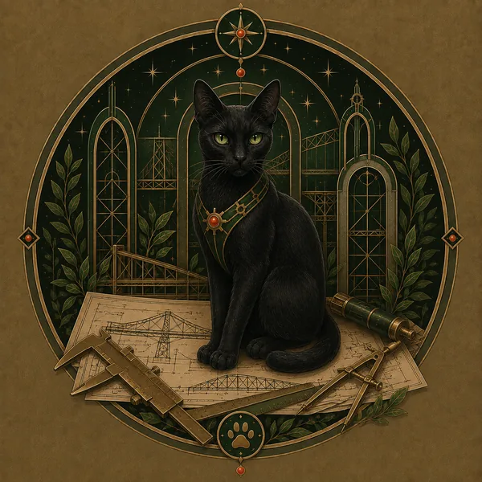
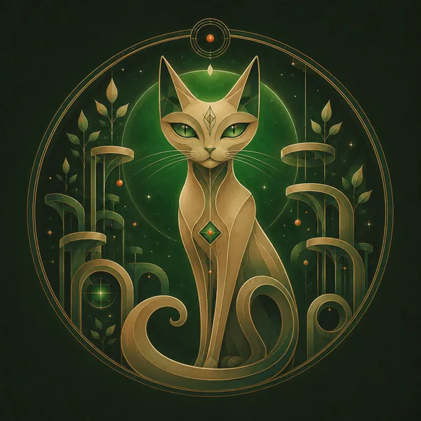
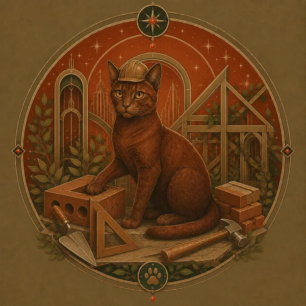
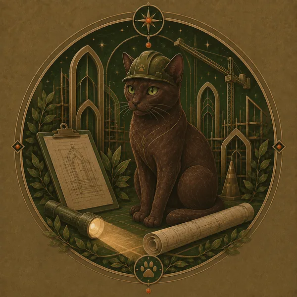
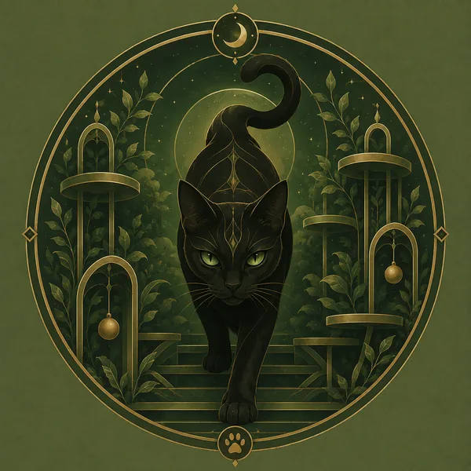
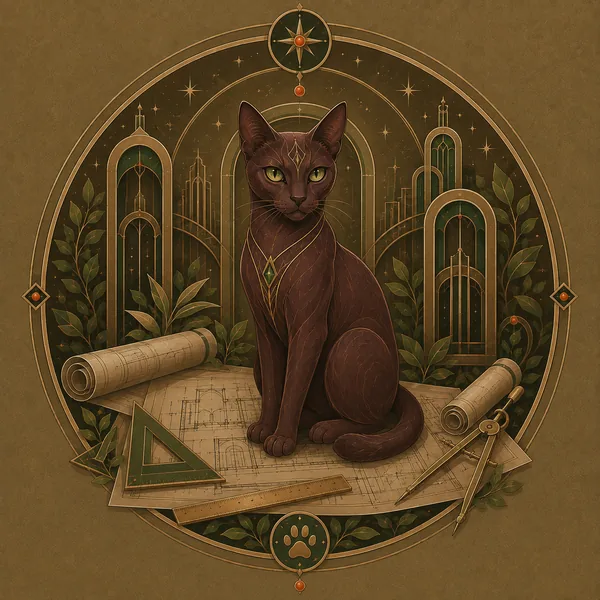

Cat Name

Cat Description

Whether it's an elevated walkway, a climbable tower, or your idea sketched on a napkin, we bring your vision of a cat's paradise to life.


Thom and Meara Arboren live in Portland, Oregon with their 6 cats and their custom 100 sq ft Catio. They built their first catio in 2020, when they blended their cat families. Donnie and Artie, Meara’s cats, fell in love with Nell’s simple catio. Then, what started as a simple 2x4x6ft catio grew into a 20 ft, 3-part catio, which gave each cat space to roam safely in the sun!
Thom’s construction experience began as early as he can remember, always willing to help his large family with home renovations from painting to drywall to plumbing. As a young adult he became an apprentice in drafting and CNC woodworking, then earned his Associates Degree and Certificate in Computer Aided Drafting from Portland Community College. Since then he continues to learn and grow his design skills utilizing a range of softwares and machine manufacturing techniques. Always looking to create and to innovate, he joined the Ministry of Stupid Ideas and spent the last decade bringing projects of high complexity but questionable value, to life. Thom designed and led the build of the Ill-considered Strength-O-Meter, an interactive 37-foot Fire-spouting High Striker at the 2024 Portland Winter Lights Festival. Other contributions include the Eternal Flame of Stupid Ideas (PWLF 2025).
In 2021, Meara’s parents moved to Portland, fell in ove with the catio the couple had constructed for their own cats, and decided they wanted a catio of their own. They decided on an enclosed back porch and separate tower for their side yard. As the build progressed, they began to spitball the idea of someday building a 30 foot bridge to span the separate catios. Those evening and weekend brainstorming and dream sessions blossomed into a plan for 3 scale models of real Portland bridges.

Cat Description

Cat Description

Cat Description

Cat Description

Cat Description

Cat Description
Bringing a catio to life with Arboren CAThedrals is easy.

Photos of the build process in action.
14 feet long, modeled after the Hawthorne Bridge — the first of three skybridges linking the Dicks' backyard catio towers.
Runs along the fence line toward the back of the property, connecting one catio tower to the next.
Closes the loop back to the porch catio — 60 feet of connected skybridge in total.
Eight-foot transition towers where bridges meet, sized for climbing, lounging, and birdwatching.
Soft flap inserts built into window frames for year-round indoor/outdoor access.
All three bridges and two towers connected into one continuous indoor-outdoor cat highway.
Elevated catwalks — from a short backyard link to multi-bridge loops — designed around your yard and your cats' favorite routes.
Standalone or bridge-connected towers with platforms for climbing, sunbathing, and birdwatching from a safe height.
Custom flap inserts built into window and door frames for year-round indoor/outdoor access.
Enclosed tunnels connecting rooms, floors, or yard structures — great for tight spaces or multi-level homes.
Have a theme in mind? Thom loves a good pun and a good blueprint — from local landmarks to whatever your cats deserve.
Every project is different, so pricing is custom too. Contact Thom for a free consultation and quote.
Tell Thom about your space, your cats, and your bridge-pun ideas.
“This family built stunning replicas of Portland bridges in their backyard — exclusively for their cats.”
— Janet Eastman, The Oregonian / OregonLive, August 2026
Read the Article“As a kitten, Princess Nell lived with me on 20 acres as an indoor-outdoor cat. She was noticeably dejected after I moved into a basement apartment in Portland.”
— Janet Eastman, The Oregonian / OregonLive, August 2026
Read the ArticleCatch the “Pawthorne,” “Taillikum,” and “CAThedral” bridges in person at the 14th Annual Catio Tour, Saturday, September 12, in Southeast Portland.